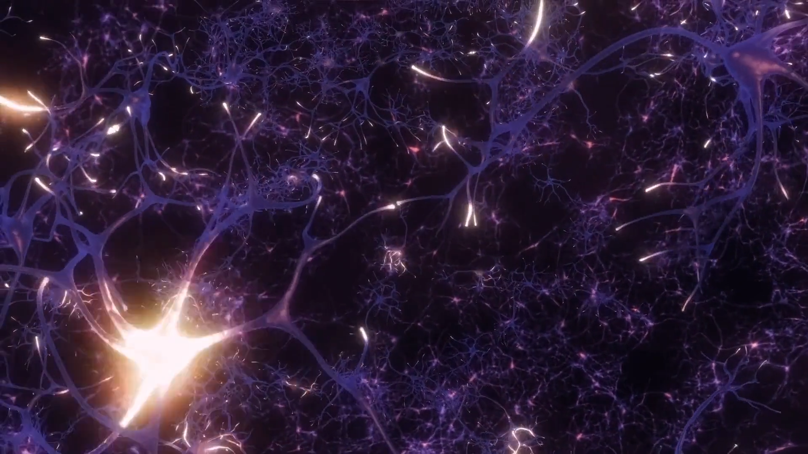

Internet for Generation Beta- Blockchain
The future of the Internet has been the subject of much speculation and debate in the past few years. From the rise of virtual worlds and immersive experiences to the explosive growth of social media, the internet has become a ubiquitous medium for communication and commerce With the rise of blockchain, theinternet is about to go through a major transformation.
This isn’t the first transformation of the internet. Since its public emergence nearly 30years ago, the internet has gone through two major evolutions and is about to go through a third. These transformations not only have changed how we use the internet and what we use it for, but they have impacted the world at large, changing how we live and work and interact with others.
The descendants of gen z so called generation Beta would be born in blockchain world, the word blockchain would replace internet and as generation passes humans will have their upgraded versions of blockchain not Internet. As u can say blockchain is the new networking the prospect of the word internet would hold no value.
The Invisible Technology That's Changing the World
Blockchain-based networks, decentralized apps (DApps), and distributed ledgers are becoming the foundation of much of your digital life. There's a new immutable digital fabric remaking the internet beneath us, and you probably don't even realize it.
Blockchain isn't a household buzzword, like the cloud or the Internet of Things. It's not an in-your-face innovation you can see and touch as easily as a smartphone or a package from Amazon. But in a world where anyone can edit a Wikipedia entry, blockchain is the answer to a question we've been asking since the dawn of the internet age: How can we collectively trust what happens online?
 Every year we run more of our lives—more core functions of our governments, economies, and
societies—on the internet. We do our banking online. We shop online. We log into apps and services
that make up our digital selves and send information back and forth. Think of blockchain as a
historical fabric underneath recording everything that happens—every digital transaction; exchange
of value, goods and services; or private data—exactly as it occurs. Then the chain stitches that
data into encrypted blocks that can never be modified and scatters the pieces across a worldwide
network of distributed computers or "nodes."
Every year we run more of our lives—more core functions of our governments, economies, and
societies—on the internet. We do our banking online. We shop online. We log into apps and services
that make up our digital selves and send information back and forth. Think of blockchain as a
historical fabric underneath recording everything that happens—every digital transaction; exchange
of value, goods and services; or private data—exactly as it occurs. Then the chain stitches that
data into encrypted blocks that can never be modified and scatters the pieces across a worldwide
network of distributed computers or "nodes."
Think about a blockchain as a distributed database that maintains a shared list of records. These records are called blocks, and each encrypted block of code contains the history of every block that came before it with timestamped transaction data down to the second. In effect, you know, chaining those blocks together. Hence blockchain.
A blockchain is made up of two primary components: a decentralized network facilitating and verifying transactions, and the immutable ledger that network maintains. Everyone in the network can see this shared transaction ledger, but there is no single point of failure from which records or digital assets can be hacked or corrupted. Because of that decentralized trust, there's also no one organization controlling that data, be it a big bank or a tech giant like Facebook or Google. No third-parties serving as the gatekeepers of the internet. The power of blockchain's distributed ledger technology has applications across every kind of digital record and transaction, and we're already beginning to see major industries leaning into the shift.
First up are the big banks and tech giants. Big business will always drive innovation, and the rise of blockchain-based smart contracts (read on for a deeper explanation) turns blockchain into a middleman to execute all manner of complex business deals, legal agreements, and automated exchanges of data. Companies such as Microsoft and IBM are using their cloud infrastructure to build custom blockchains for customers and experiment with their own use cases, like building a worldwide food safety network of manufacturers and retailers. On the academic side, researchers are exploring blockchain applications for projects ranging from digital identity to medical and insurance records.
At the same time, dozens of startups are using the technology for everything from global payments to music sharing, from tracking diamond sales to the legal marijuana industry. That's why blockchain's potential is so vast: When it comes to digital assets and transactions, you can put absolutely anything on a blockchain. A host of economic, legal, regulatory, and technological hurdles must be scaled before we see widespread adoption of blockchain technology, but first movers are making incredible strides. Within the next handful of years, large swaths of your digital life may begin to run atop a blockchain foundation—and you may not even realize it.
Blockchain - Prespective through my inverted image
Human brains have to manage an inconceivably massive amount of information. By current estimations, we are offloading, transferring, and storing information upward of 2.5 quintillion bytes a day.In this, humans require a trustable mechanism for recalling and telling their story. And such technology could enable the betterment of the human species.
To this end, there is a growing interest in the convergence of IoMT (Internet of Medical Technology), self-adjusting algorithms optimising central nervous system patterns, and a smart ledger of quantifiable human record. Among the companies at the forefront are Elon Musk’s Neuralink, Bryan Johnson’s Kernel, and the award-winning Silicon Valley company Neuropace. These teams are using technology to sense, analyze, and respond to changes in brain behaviour. And their work poses a foundational opportunity to augment the human brain’s ability to recall memories, make smarter decisions, and objectively learn about consciousness 
Imagine wearable devices or neural implants capturing data that will enable a vastly profound understanding of human consciousness; and algorithms that determine the importance of a memory and “prune” it to improve cognitive or motor function. Imagine an immutable, objective record of human experience in place of subjective histories.
This is where blockchain technology comes in. Blockchain technologies in conjunction with neural implants will be capable of capturing and encoding thoughts, providing smart ledgers to represent human experience data logging.
Brain on Blockchain
Blockchains are a form of information technology with several important future applications capable of supporting brain augmentation. One proposal is the storing of mindfiles, which would act as building blocks of data in personal thinking chains, shareable in a peer-to-peer network file system that allows historical versioning. This type of Blockchain thinking is proposed as an input-processing-output computational system with several features that lend opportunity for artificial intelligence, human enhancement, and their potential integration.Blockchain allows an interconnected network of computers to shake hands at intervals of a timestamp to validate the source and truth of a ledger. If we were to build a brain from the ground up, this type of trust mechanism could enable nets of neurons to store and recall information with accuracy and trust of what is subjective versus an objective of a given experience.
The multi-factor authentication connecting to a personal thinking chain as a blockchain implementation can enable opportunity for the safe building of a quantified-self data commons for human beings. Such a data-commons reduces the siloes of human data, while also allowing for each human to keep ownership over the privacy or sharing of their experience, possibly to garner monetary benefit without the use of a third party or centralised authority.
At some future date using an augmented version of this technology, when two or more people experience the same moment, though from subjective perspectives, we could reassemble their experiences to be more objective about the happenings of that moment. Ideally, this would enable the creation of virtual simulations for past memories, and the potential to see subjectively from someone else’s perspective. Once we have a better elastic understanding of individual mappings to emotions and sensory experiences as contributive to a given memory, this would take in data from the senses onto this future blockchain – like sight, smell, etc.
And the fact is, the technologies to make this a reality are being developed. In the not-so-distant future, we can begin recording our sensory experiences by the use of wearable technology, the current state of brain and nerve implants, biofeedback imaging, and any other sensors that permit a multi-factor fingerprint specific to a given human’s record of temporal experience. Using these technologies as a starting point, research can be performed into improvement of decision making, learning, recall, and rehabilitative protocols.
Mindware
Somewhere along this way in parallel, we would want to compile memory after memory into an understanding of experiential ability, so that we could create mindware – i.e., software built upon the premise of experiential understanding of a given human’s subjective experiences. Mindware would be composed of mindfiles, uploaded, interconnected, and shared in a peer-to-peer network file system.High accuracy mind clones could then be built as an additional layer, and we could create entire virtual simulations of experiences past, current, or entirely separate from temporal reality (though with similar physical and thermodynamic laws as our current shared reality). Our mind clones could act on our behalf to garner additional experience, ability, or even perform jobs that supplement our immutable, yet exponential record of life as it passes through the generations.
Memories would not be the only realm we would want an immutable ledger of, though. Biochemical exchanges, drug interactions, rehabilitative progress, and even testing a hyper-speed-like learning of new abilities are all forms of an immutable record that could benefit our understanding of the brain and the overall functioning of the central nervous system.
What if our brain’s plasticity drove our expert software systems? What if the exponential augmentation of such an implementation allowed thought computation to perceive the implications of one decision as it progresses thousands of years into the future? By connecting the computation of our biology with the unfathomable world of data we currently have and will share, our very perception of time and our impact upon time would disintegrate and reintegrate into a new awareness of our conscious ability to evolve intelligently by the design that we collectively choose.
Through merging with self-adjusting artificially intelligent algorithms and the fusion of wetware and intelligent software, we could drive an exponential enhancement of human capability, giving us previously unimagined capabilities to rewrite genetic code, single neurons, overall brain circuitry, and biochemical patterns. It could make possible interaction with external environmental sensors, autonomous machines, and even other conscious beings, manipulating the temporal sensory experience and our surrounding environment in parallel.
Highly complex obstacles, of course, do remain. As a society, we must first attempt to agree on the sort of society we want to build. We need to revisit consensus models for societal change and seek to understand the reward systems dictating social behaviour. Together we must decide on a standardised approach to the betterment of our species, designing these new technologies in such a way that they may serve to motivate according to principles of collective altruism – rather than egocentric or materialistic values. Only reaching these consensuses, and building technologies accordingly, can we stave off undesirable consequences and assist in the advancement of humankind.